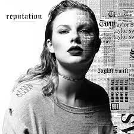
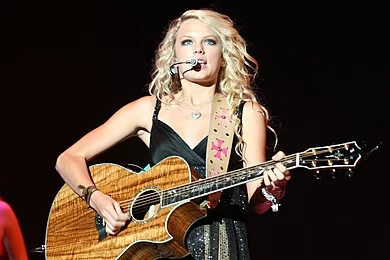
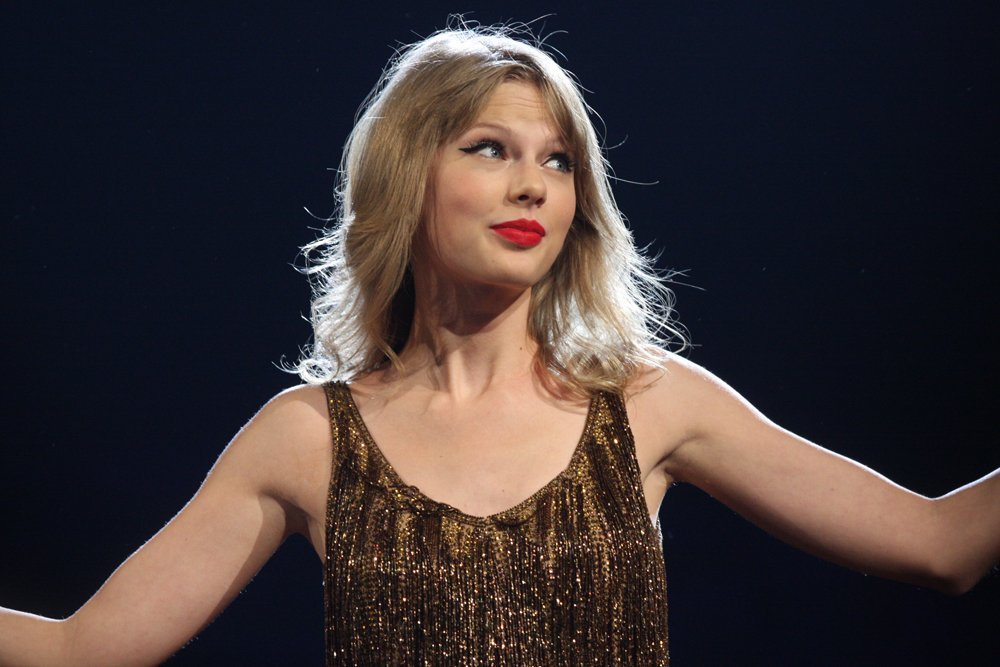

Taylor Swift
Taylor Alison Swift (born December 13, 1989) is an American singer-songwriter. Her artistry, songwriting, and entrepreneurship have influenced the music industry, popular culture, and politics, and her life is a subject of widespread media coverage.
Swift began professional songwriting at 14. She signed with Big Machine Records in 2005 and achieved prominence as a country pop singer with the albums Taylor Swift (2006) and Fearless (2008). The singles "Teardrops on My Guitar", "Love Story", and "You Belong with Me" were crossover successes on country and pop radio formats and brought Swift mainstream fame. She experimented with rock and electronic styles on her next albums, Speak Now (2010) and Red (2012), respectively, with the latter featuring her first Billboard Hot 100 number-one single, "We Are Never Ever Getting Back Together". Swift recalibrated her image from country to pop with 1989 (2014), a synth-pop album supported by the chart-topping songs "Shake It Off", "Blank Space", and "Bad Blood". Media scrutiny inspired the hip-hop-influenced Reputation (2017) and its number-one single "Look What You Made Me Do".

Taylor Alison Swift was born on December 13, 1989,in West Reading, Pennsylvania. She is named after singer-songwriter James Taylor. Her father, Scott Kingsley Swift, is a former stockbroker for Merrill Lynch and her mother, Andrea Gardner Swift (née Finlay), worked for a time as a mutual fund marketing executive. Swift's younger brother, Austin, is an actor.
Swift's mother is of Scottish and German descent, and her father is of Scottish and English descent with distant Italian ancestry. Swift's paternal great-great-grandfather, Charles C. A. Baldi, was an Italian immigrant entrepreneur and community leader who opened several businesses in Philadelphia in the 1800s. Her maternal grandmother, Marjorie Finlay (née Moehlenkamp), was an opera singer, whose singing in church became one of her earliest memories in music that shaped her career.
Swift spent her early years on a Christmas tree farm that her father had purchased from one of his clients.She is a Christian. She attended preschool and kindergarten at Alvernia Montessori School, run by Bernardine Franciscan sisters, before transferring to the Wyndcroft School. The family moved to a rented house in Wyomissing, Pennsylvania, where Swift attended Wyomissing Area Junior/Senior High School.

At the age of nine, Swift became interested in musical theater and performed in four Berks Youth Theatre Academy productions. She also traveled regularly to New York City for vocal and acting lessons. Swift later shifted her focus toward country music, inspired by Shania Twain's songs, which made her "want to just run around the block four times and daydream about everything". She spent weekends performing at local festivals and events.After watching a documentary about Faith Hill, Swift felt she needed to move to Nashville, Tennessee, to pursue a career in music. She traveled there with her mother at age eleven to visit record labels and submitted demo tapes of Dolly Parton and Dixie Chicks karaoke covers. She was rejected, however, because "everyone in that town wanted to do what I wanted to do. So, I kept thinking to myself, I need to figure out a way to be different."She spent summers in Stone Harbor, New Jersey until she was fourteen years old, performing in a local coffee shop.

In 2002, when Swift was around twelve years old, local musician Ronnie Cremer taught her to play guitar. Cremer helped with her first efforts as a songwriter, leading her to write "Lucky You". In 2003, Swift and her parents started working with New York–based talent manager Dan Dymtrow. With his help, Swift modeled for Abercrombie & Fitch as part of their "Rising Stars" campaign, had an original song included on a Maybelline compilation CD, and met with major record labels.After performing original songs at an RCA Records showcase, Swift, then thirteen years old, was given an artist development deal and began making frequent trips to Nashville with her mother.To help Swift break into the country music scene, her father transferred to Merrill Lynch's Nashville office when she was fourteen years old, and the family relocated to Hendersonville, Tennessee.Swift attended Hendersonville High School before transferring to Aaron Academy after two years, which better accommodated her touring schedule through homeschooling. She graduated one year early.
link Taylor Swift